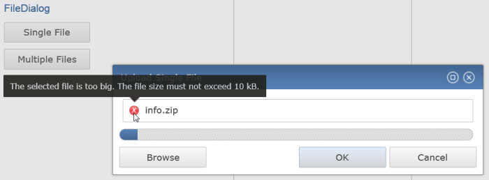

FileDialog now shows a tooltip when you roll over the "failed" icon with the reason of the failure.

Grid.recalculateHeader() methodGrid.getColumn(Point) methodColumnViewer#applyEditorValue method publicSelectionChangedEvent.getStructuredSelection()e4 application arguments like "-clearPersistedState" are now respected.
Using arrow keys in iOS virtual keyboard is now correctly handled by the framework.